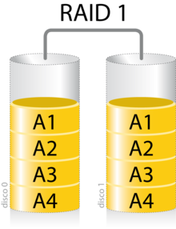

Raid
Un grupo/matriz redundante de discos independientes (también, RAID, del inglés redundant array of independent disks) hace referencia a un sistema de almacenamiento de datos que utiliza múltiples unidades (discos duros o SSD), entre las cuales se distribuyen o replican los datos.
Dependiendo de su configuración (a la que suele llamarse nivel), los beneficios de un RAID respecto a un único disco son uno o varios de los siguientes: mayor integridad, tolerancia frente a fallos, tasa de transferencia y capacidad. En el nivel más simple, un RAID combina varios discos duros en una sola unidad lógica. Así, en lugar de ver varios discos duros diferentes, el sistema operativo ve uno solo.
Los niveles RAID más comúnmente usados son:
RAID 0: Conjunto dividido
Un RAID 0 (también llamado conjunto dividido, volumen dividido, volumen seccionado) distribuye los datos equitativamente entre dos o más discos . El RAID 0 se usa habitualmente para proporcionar un alto rendimiento de escritura ya que los datos se escriben en dos o más discos de forma paralela, aunque un mismo fichero solo está presente una vez en el conjunto. RAID 0 también puede utilizarse como forma de crear un pequeño número de grandes discos virtuales a partir de un gran número de pequeños discos físicos. Un RAID 0 puede ser creado con discos de diferentes tamaños, pero el espacio de almacenamiento añadido al conjunto estará limitado por el tamaño del disco más pequeño.
No debe confundirse RAID 0 con un Volumen Distribuido (Spanned Volume) en el cual se agregan múltiples espacios no usados de varios discos para formar un único disco virtual. Es posible que en un Volumen Distribuido el fichero a recuperar esté presente en un solo disco del conjunto, debido a que aquí no hay una distribución equitativa de los datos (como se mencionó, para RAID 0); por lo tanto, en ese caso no sería posible la recuperación paralela de datos y no mejoraría el rendimiento de lectura.
RAID 1: Conjunto en espejo
Un RAID 1 crea una copia exacta (o espejo) de un conjunto de datos en dos o más discos. Esto resulta útil cuando queremos tener más seguridad desaprovechando capacidad, ya que si perdemos un disco, tenemos el otro con la misma información. Un conjunto RAID 1 sólo puede ser tan grande como el más pequeño de sus discos. Un RAID 1 clásico consiste en dos discos en espejo, lo que incrementa exponencialmente la fiabilidad respecto a un solo disco; es decir, la probabilidad de fallo del conjunto es igual al producto de las probabilidades de fallo de cada uno de los discos (pues para que el conjunto falle es necesario que lo hagan todos sus discos).
Además, dado que todos los datos están en dos o más discos, con hardware habitualmente independiente, el rendimiento de lectura se incrementa aproximadamente como múltiplo lineal del número de copias; es decir, un RAID 1 puede estar leyendo simultáneamente dos datos diferentes en dos discos diferentes, por lo que su rendimiento se duplica.
Al escribir, el conjunto se comporta como un único disco, dado que los datos deben ser escritos en todos los discos del RAID 1. Por tanto, el rendimiento de escritura no mejora.
El RAID 1 tiene muchas ventajas de administración. Por ejemplo, en algunos entornos 24/7, es posible «dividir el espejo»: marcar un disco como inactivo, hacer una copia de seguridad de dicho disco y luego «reconstruir» el espejo.